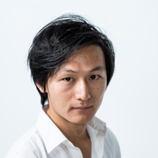
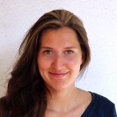

About Escargot
Yuanye Lu 陆原野
Yuanye is originally from China. He graduated from Sciences Po Paris and is currently completing his final year at the Cours Florent theater institute in Paris. His strong interest in cinema led him to complete a thesis in European cinema policies. He has performed professionally in films and theatre productions, notably in the Marcus Borja’s play Théâter in Théâtre de la Colline and the French film La terre penche by Christelle Lheureux. He is currently directing a play Die Hamlet / Maschine for Chinese and French audience.
Yuanye is co-founder of Escargot Productions, with a vision to bridge the gap between European and Chinese audiovisual markets.
Charlotte Schranz
Charlotte graduated from Sciences Po Paris with a Bachelor's degree with honors and a Master's Degree in Communication. She started her career as a trainee for the French-German television channel ARTE. She then developed documentary projects for French and international channels with the TV-production company Pernel Media. She also worked with the award-winning German director Arne Birkenstock on the transmedia project "The Congo Tribunal".
Charlotte Schranz is producer and head of international development for Escargot productions.